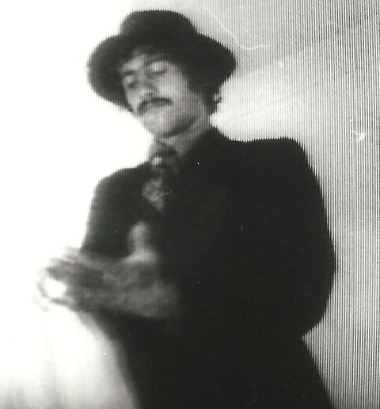
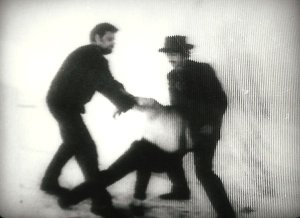
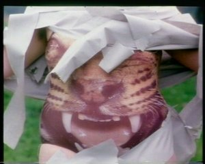

lost & found
ALEXEIJ SAGERER
Website von Alexeij Sagerer
Alexeij Sagerer, When you talk about independent theater in Munich, then the first name that comes to mind is Alexeij Sagerer. "Theater heute" wrote that he was probably the most important experimenter in the entire independent scene, and characterized him as a "Woyzeck-like director," who doesn't use the calculations of culture management, but rather strives for and works with his own structure in an almost monomaniac manner.
Alexeij Sagerer was born in 1944 in Plattling, Lower Bavaria. He has been living since 1969 in Munich, where he founded his theater group proT that same year. He and his theater group received the Theater Award of the City of Munich in 1997.

We are proud to discover at UNDERDOX his first films he realized before becoming a theater avantgardist.
sunday 8 oct 3.00 p.m. werkstattkino
Krimi

BRD 1969 - 35 mm – 35 minPremiered 2 Dec 1969
Europa-Filmpalast, Munich
B: Alexeij Sagerer – DOP: Lothar Stickel-
brucks – E: Lothar Stickelbrucks, Alexeij Sagerer – M: Maximilian von Berg – P: proT
With Guenter Albert, Erwin A. Leitner,
Manuela Hollack, Maximilian von Berg, Christopher Price, Reinhold Nothoff
Pherachthis

Premiered 12 Apr 1970
B: Alexeij Sagerer, Jürgen von
Hündeberg – DOP: Axel Hesse
M: Jürgen von Hündeberg
Romance
BRD 1969 – 16mm – 20 min
Premiered 30 Nov 1969
B: Alexeij Sagerer, Jürgen von Hünde-
berg – DOP: Axel Hesse – M: Jürgen von Hündeberg – With George Augusta, Rosemarie Barens
Premiered 30 Nov 1969
B: Alexeij Sagerer, Jürgen von Hünde-
berg – DOP: Axel Hesse – M: Jürgen von Hündeberg – With George Augusta, Rosemarie Barens
Werbefilm für Tieger

BRD 1978 – 35 mm – 1'30''B: Alexeij Sagerer – DOP: Sepp Heyne
With Jürgen von Hündeberg, Cornelie Müller, Agathe Taffertshofer, Billie Zöckler und Alexeij Sagerer
Films Krimi 1969 – Romance 1969 – Pherachthis 1970 – Aumühle 1973 – Werbefilm Eins 1978 – Werbefilm Zwei 1980 – Musikfilm 1980 – Räume I & II 1980 – Die Nibelungen am VierVideoTurm 1992 – Der größte Film aller Zeiten 1997ff. – Reine Pornographie 2006 – Reines Trinken 2008